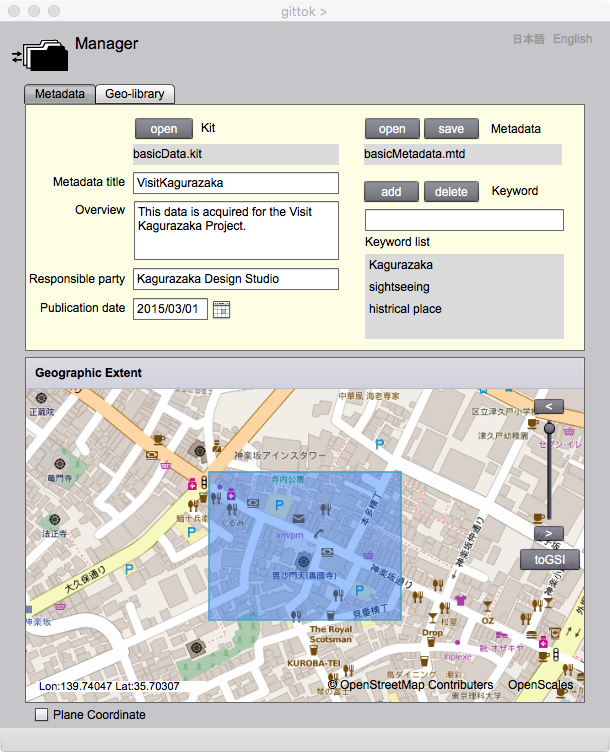

Manager
データ管理
キットを複数作ると，それがどのような経緯でできたものか分からなくなるかもしれません．しかし，それぞれのキットを説明するメタデータ（データに関するデータ [ISO 19115:2003, JIS 711:2005]）を作成しておけば，それを見ることによって，既に作られた地理データを検索したり，更新したりすることができるようになります．また，メタデータを特定のフォルダーに入れておけば，図書館の索引のように，必要なキットを入手することが可能になります．このような仕組みを，ここではジオ・ライブラリーと呼びます．これは，普通はWeb上にありますが，gittokの場合は，自分で作成したメタデータしか見ることができません．ジオ・ライブラリーの実例を見たい場合は，例えば，国土地理院が公開している地理空間情報ライブラリー を見るといいでしょう，
Manager は，2つの機能をもっています．それは，
- Metadara Edior，
- Geo-library
です．
Metadata Editor

Fields
Kit
メタデータが説明するキットのファイル名が表示されます．
Metadata
キットを説明するメタデータのファイル名が表示されます．メタデータファイルの接尾辞は，mtdでなければいけません．
Metadata title（編集可能）
メタデータの表題をここにキーインします．
Overview（編集可能）
これは概覧と呼びますが，データの簡単な説明をここに入力します．
Responsible party（編集可能）
これは責任者，つまりキットに対して責任を持つ人や組織の名前をいれます．
Publication date （編集可能）
これは，キットができて公開された日付です．
Keywords（編集可能）
キットを説明するキーワードをここに入力して，addボタンを押すと，Keyword listにキーワードが追加されます．
Geographic Extent
表示されている地図上に，キットの地理的な範囲が表示されます．この画面の地図は，拡大・縮小，平行移動ができます．
Buttons
open (Kit)
メタデータが説明するキットをオープンします．
open (Metadata)
メタデータをオープンします．
save (Metadata)
メタデータをセーブします．
add (Keyword)
キーワード欄にインプットされたキーワードを Keyword list に追加登録します．
delete (Keyword)
Keyword list中で指定されたキーワードを削除します．
<
地図の拡大ができます．
>
地図の縮小ができます．
スライダー
地図の拡大・縮小が連続的にできます．
OSM/GSI
OSMを選択すると地図が，Open Street Mapの地図になります．GSIを選択すると国土地理院が提供している地理院地図になります．
Geo-library
Fields
Catalogue
メタデータの集りが入っているフォルダーの名前が示されます．
Metadata list（編集可能）
指定されたフォルダーに入っているメタデータの一覧が表示されます．ただし，narrow downボタンを押して絞り込みをすると，条件にあったメタデータしか表示されなくなります．元に戻すには，resetボタンを押します．
Title（編集可能）
左にあるラジオボタンを押し，メタデータのタイトルをここにキーインして，refineボタンを押すと，タイトルによるメタデータの絞り込みができます．
Keyword（編集可能）
左にあるラジオボタンを押し，キーワードをここにキーインして，refineボタンを押すと，メタデータの絞り込みができます．
Publication extent（編集可能）
左にあるラジオボタンを押し，開始日付（begin）及び終了日付（end）を指定し，refineボタンを押すと，その時間範囲に入る発行日付をもつメタデータの絞り込みができます．
Geographic Extent（検索可能）
地理範囲をカーソルでクリックすると，その範囲内に入るメタデータがリスト上でハイライトされ，メタデータが絞り込まれます．
Buttons
select
メタデータの収納されているフォルダーを指定します．
refine
指定されたキーワードや地理範囲等を使って，メタデータの絞り込みをします．
reset
選択フォルダーに入っているメタデータを全て表示し直し，表示欄のリセットをします．
metadata edit
最終的に選択されたメタデータを示すため，Metadata Editorタブボックスを開きます．
maintenance
最終的に選択されたメタデータが説明しているキットの更新を可能にするために，Editor ページを開きます．
analysis
最終的にセンタkされたメタデータが説明しているキットを使って空間解析を行うために，Analyst
ページを開きます．
exchange
キットのエンコーディングをするEcchanger ページが開きます．
mapping
キットを地図表示するためのMap Editor ページが開きます．
Title
このボタンを押して，メタデータのタイトルを入力すると，タイトルをキーワードにしたメタデータの絞り込みができるようになります．
Keyword
このボタンを押して，キーワードを入力して，メタデータの絞り込みができるようにします．
Publication extent
このボタンを押して，期間を入力すると，この期間に入る発行日付をもつメタデータの絞り込みができるようになります．
<
地図の拡大ができます．
>
地図の縮小ができます．
スライダー
地図の拡大・縮小が連続的にできます．
OSM/GSI
OSMを選択すると地図が，Open Street Mapの地図になります．GSIを選択すると国土地理院が提供している地理院地図になります．
日本語
今あなたが読んでいるドキュメントが表示されます．
English
You can read the tutorial written in English.